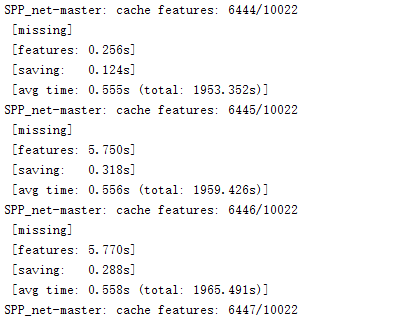
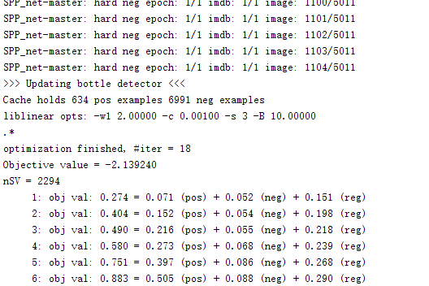

SPP-net + Windows 8.1 安装配置指南
特别说明：
1. 本文为作者亲自实验完成，但仅限用于学术交流使用，使用本指南造成的任何不良后果由使用者自行承担，与本博主无关，谢谢！
2. 本文旨在为新手提供一个参考，请高手勿要吐槽，有暴力倾向者，请绕道，谢谢！
3. Matlab比较崩溃的是，出错直接崩溃，没有提示信息，所以…
4. 有任何疑问请参考官网：https://github.com/ShaoqingRen/SPP_net , 本文涉及到的各种软件包，有可能会因为校园网、公网、墙等问题导致无法下载，请大家各显其能吧。
5. 最后更新时间：2015年4月14日。
简单介绍一下：SPP_net 源于微软2014年发布的论文《Spatial Pyramid Pooling in Deep Convolutional Networks for Visual Recognition》，主要实现基于空间金字塔的分类与检测，该方法可以大大提高目标检测的速度，相比RCNN有60倍的性能提升。整个SPP_net配置起来还算是比较清晰，而且基于Windows的也相对容易一些，比Caffe简单。
本文主要包含三个部分：
- 第一部分 运行环境
- 第二部分 安装步骤
- 第三部分 运行VOC2007 Demo
第一部分 运行环境
硬件：Intel i7-4770k, GTX 770 4G, 16G memory
软件：Windows 8.1，Matlab R2014a(64bit)，Microsoft Visual Studio 2013
PS：其他配置理论也可以，只要版本不要太低就行
第二部分：安装步骤
1. 下载SPP_net-master
URL：https://github.com/ShaoqingRen/SPP_net
解压到D:\SPP_net-master
2.下载caffe-master (spp_net) 版
URL：https://github.com/ShaoqingRen/caffe
解压到D:\SPP_net-master\external\caffe
3. 下载caffe依赖文件SPP_net_release1_data_caffe_mex_cuda5.5.zip
运行SPP_net-master\external\fetch_caffe_mex_5_5.m
解压到D:\SPP_net-master\external\caffe\matlab\caffe
4.下载SelectiveSearchCodeIJCV
URL：http://disi.unitn.it/~uijlings/MyHomepage/index.php#page=projects1
解压到D:\SPP_net-master\selective_search
5. 下载 SPP_net_release1_VOC2007_selective_search_data.zip
运行：data\fetch_ss_data_voc2007.m
解压到：D:\SPP_net-master\data\selective_search
6. 下载spp_net模型文件SPP_net_release1_data.zip
运行：data\fetch_model_data.m
解压到：D:\SPP_net-master\data 和 D:\SPP_net-master\finetuning
7. 启动SPP_net
运行matlab，并执行D:\SPP_net-master\data\startup.m
PS：根据代码需要，可能每次运行都要执行，其实就是载入一些初始变量。
8. 编译基本函数
执行：spp_build.m，自动生成D:\SPP_net-master\bin 下liblinear_train，nms_mex，spp_pool_caffe_mex等7个mex文件
第三部分 运行VOC2007 Demo
1. 下载VOC 2007 数据集
包括三个文件：VOCdevkit_08-Jun-2007.tar, VOCtrainval_06-Nov-2007.tar, VOCtest_06-Nov-2007.tar VOCdevkit_08-Jun-2007
全部解压到D:\SPP_net-master\datasets\VOCdevkit2007
PS：原文件名VOCdevkit需要改名为VOCdevkit2007
2. 训练模型
运行训练文件：D:\SPP_net-master\experiments\Script_spp_voc.m
执行过程：Extract feature – Finetune FC – Train SVM – BBox Regression
所有训练样本被flip，并保存到D:\SPP_net-master\datasets\VOCdevkit2007\VOC2007\JPEGImages
所有train，test，val，roi被保存到D:\SPP_net-master\imdb\cache
PS: 这一步主要是根据论文中那个multi-scale feature extraction方案进行多尺度的提取特征，多尺度的目的自然是改进性能。但是对GPU要求比较高，主要是要求较大的显存，我的GTX 770 4G并不能满足所有样本需要。为了解决这个问题，我做了两个小的修改，损失一些性能（可以看出来CPU和GPU的性能差异蛮大的）：
修改地址：D:\SPP_net-master\experiments\Script_spp_voc.m
修改地址：D:\SPP_net-master\experiments\spp_exp_cache_features_voc.m
%opts.spm_im_size = [480 576 688 874 1200];
opts.spm_im_size = [384 480 576 688 874];
修改地址：D:\SPP_net-master\spp_features_convX.m
if ~use_gpu || (numel(resized_im) > 1200*2400*1.2)
3) 理论上修改第二条就可以，第一条会整体降低精度，第二条只是切换GPU和CPU影响训练时间，但是测试的时候，一时也找不到一个合适的阈值，就随便设置了一个。不过根据论文，从多尺度和但尺度采样只有1%左右的性能提升，我这里只是修改了一个尺度，性能下降应该不是很明显。设备不行，也没办法！~
PS：这一步比较困难的一个问题，还是设备性能的问题，微调如果同时取样的样本过多，会带来内存和硬盘的假死。所以需要修改batch-size，具体数值根据自己的机器决定，具体原因这里就不做解释了，请参考caffe官网的相关tutorial。
修改地址：D:\SPP_net-master\finetune\spp_finetune_voc.m 以及相应的prototxt文件
data_param.img_num_per_iter = 128; % should be same with the prototxt file
data_param.iter_per_batch = 50; % for load data effectively
solver_param.test_iter = 50; % better times of data_param.iter_per_batch
solver_param.max_iter = 1000000;
3. 检测
单幅图像检测 D:\SPP_net-master\spp_Demo.m
使用微调后的模型：D:\SPP_net-master\cachedir\Zeiler_conv5_ft(5s_flip)_fc7\voc_2007_trainval.mat